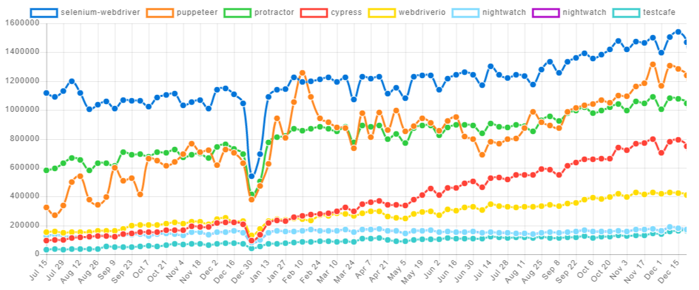
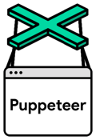

Web端
- Web端自动化操作
- 目的：模拟人手工去操作浏览器
- 常见框架有
Selenium vs Playwright
Selenium：- 优点：最流行，支持度最好
- 网上还有些专门插件实现特定功能，比如：捕获http请求的selenium-wire
- 缺点：被有些网站反爬（识别了特征？）
- 优点：最流行，支持度最好
Playwright：- 优点：简单好用
- 缺点：打开页面速度比Selenium要慢
- 之前测试过短链解析成长链期间的测试结果：
- Selenium：1.5分钟
- 模拟打开短链，跳转到长链，捕获特定http请求
- Playwright：5分钟
- 模拟google搜索，显示搜索结果
- Selenium：1.5分钟
- 之前测试过短链解析成长链期间的测试结果：
Selenium vs puppeteer
下面总结一下相关对比：
- 两者趋势
- 
具体区别：
Selenium- Logo
- 有些网站能检测到是WebDriver，就无法继续爬取了
- 注：通过
webdriver对浏览器的每一步操作都会留下特殊的痕迹，会被很多网站识别到- 规避办法：必须通过重新编译chrome的webdriver才能实现
- 麻烦得让人想哭
- 规避办法：必须通过重新编译chrome的webdriver才能实现
- 某人评论：Selenium速度慢，现在都改用
puppeteer了
- 注：通过
- 资料
webdriver- 常见
- Phantomjs
- 资料
- 常见
- 优势
- 历史悠久：2004年发布
- 目前最主流的浏览器（web页面）自动化工具
- 支持众多浏览器：
Chrome、Firefox、Safari、IE、Opera等 - 支持众多编程语言：
Java、C#、Python、Ruby等 - 通过
Selenium IDE支持录制功能 - 支持测试平台：
Web、（通过Appium）支持移动端
- 历史悠久：2004年发布
- 缺点
- 速度相对(
Puppeteer)慢一点 - 安装和设置相对(
Puppeteer)麻烦一些 - 不支持跨平台
- 截图只支持图片
- 速度相对(
- Logo
Puppeteer- Logo
- 
- 发布时间：2017年
- 开发者：
Google - 目标：简化前端测试(front-end test)和开发
- 支持浏览器：
Chrome、Chromium - 支持语言：
Javascript(Node.js) - 优势
- 速度相对快一些
- 安装和设置相对简单
- 支持跨平台
- 截图支持图片和PDF
- 缺点
- 测试平台只支持：
Web
- 测试平台只支持：
- 相关
pyppeteer- 是什么：
Puppeteer的python的binding- Unofficial Python port of puppeteer JavaScript (headless) chrome/chromium browser automation library
- 好处
- 可以绕过很多网站对于WebDriver的检测
- 可以对
js加密降维打击- 完全无视
js加密手段
- 完全无视
- 文档
- 官网
- 是什么：
- Logo